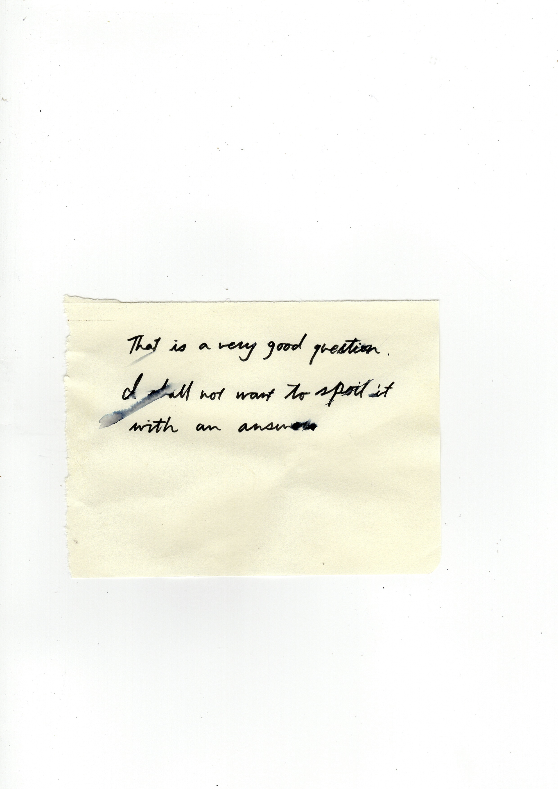
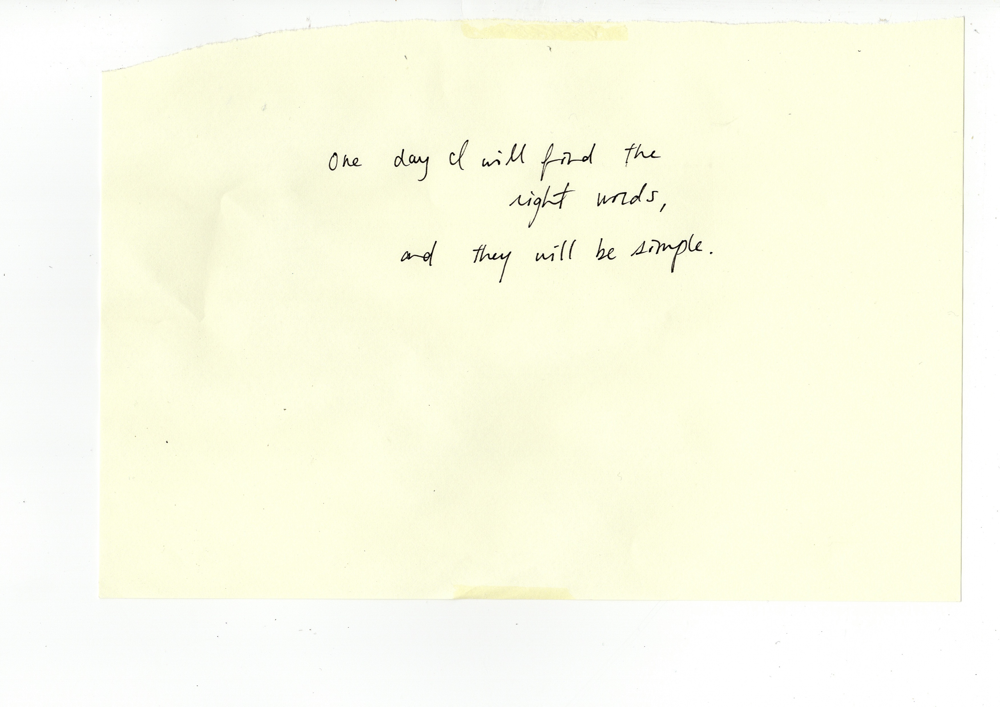
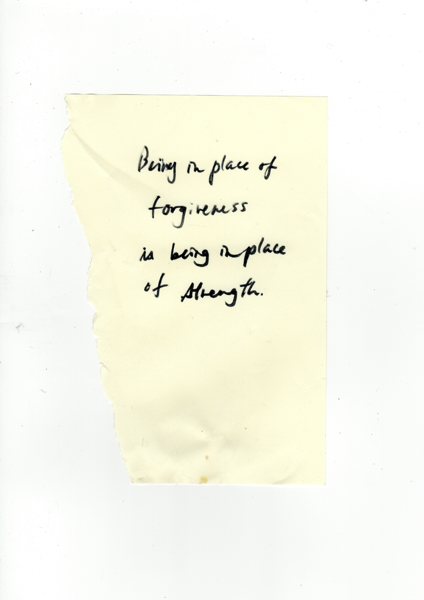
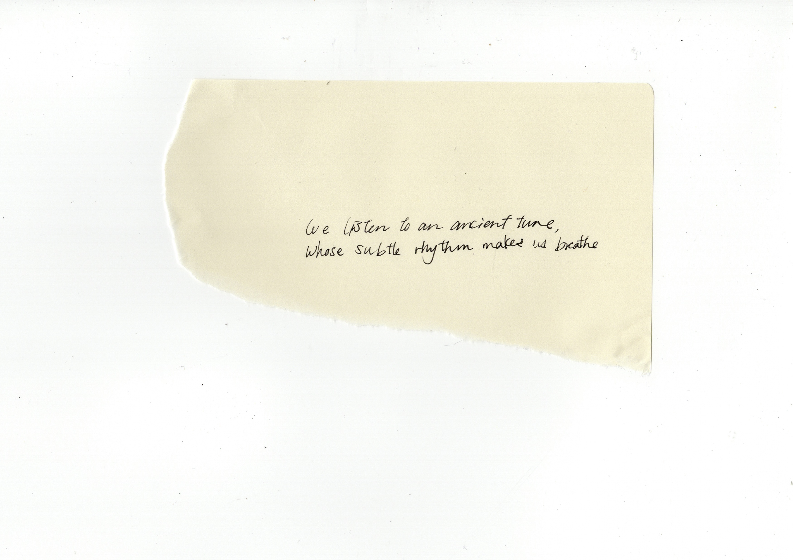

Introduction Version 1: The General
As I sit and strike the keyboard to place letters on my laptop screen, I am intently searching for the words that scoop and grasp my muddled thoughts — particles floating like space debris in the lawless universe of my mind — hoping to deliver them safely to whomever might be willing to receive them. Yet this attempt is always, at best, a sea of adversities. This is not due to a malfunction of the speech centre in my cerebrum or the emotional confusion that I had befriended alongside puberty; it is simply due to acceptance, if not resignation, of the undeniable fact that words can not do justice to the complexity of life that we carry around with us. Despite words being floating combinations of letters and sounds, vulnerable just like the concept of money, we hold an unshakable faith towards these human creations.
One day I will find the right words, and they will be simple.
These are the exact words scribbled on to the corner of a page torn out from an old notebook, and clumsily pasted on to my bathroom door. It has been a habit acquired throughout the years, to jot down words that had caught my attention and stick them to any nearby surface. Initially, it was a ritual deriving from the fear and sorrow at how easily things could be forgotten or distorted in my mind as time passed. However recently, I had an epiphany: perhaps it was an act of self-guidance. A hopeful, continuous reminder to wonder until that day when I am wise enough to fully understand the meaning of those words, for the author but more so for me. Why in that moment did these exact words pop out of the pages and shout at my conscience? I wanted a reason then, and I still search for them now.
Words. The meat and potatoes of communication.
Not many people stop amidst a conversation to think: is the person sitting across from me, who is listening to the same exact collation of words as I, understanding them exactly the same way I do? Perhaps this is not an important process in order to have a smoothly carried conversation; and rightfully so, which I will later on explain why.
Communication. The human desire to share.
The term communication derives from the latin verb communicare which means ‘to share’. Sharing is an act of distribution, conciliation, elucidation, and compromise. Hence the terms ambiguity and communication seem to be standing on the opposite polar. Besides that, the term communication nowadays can be used in the tone of, if not as a complete synonym, to clarity. “Communicate” can be a one word demand towards somebody to make their stance articulate and clear. Therefore ambiguity of words, from the common notion of verbal and textual communication, may sound and seem like an oxymoron. As much as ambiguity and communication can be a parallel counterpart depending on the context, ambiguity will always be an inhabitant of any existing word.

Introduction Version 2: The personal
I was always fascinated with ambiguity. The grey area. The intangible. The complexity. Where ends didn’t meet. The unexplainable. Humanity never seemed black or white but grey. That was what attracted me more than pure facts as we had come to know it.This became a constant source of guilt for me, especially since moving to the Western society as an adult and studying the arts where individual statement seemed so important. I thought this mentality derived from laziness or lack of concern; that I wasn’t determined enough to frame it black or white, or confident enough to structure a fixed opinion about something that no matter who poked me from whatever angle I can dodge every single one and prove I was a thorough thinker. It was unsatisfying to think I was shrugging my passive shoulder saying “Well, we all experience life differently, and we just need to deal with it” because there seemed to me is a force in this society that encourages us to declare what is true for ourselves, in black or white. However, the recent months I have come to the idea that perhaps there is some kind of truth in this ambiguity that we can’t access just by will power and that this “some kind of truth” must be the reason of my fascination.
So here I am, trying to grapple the impossible, within the restriction of merely 7000 words.
The most thinkable starting point for me in this search was language and words, my other constant obstacle and reminder of a void in communication. Ludwig Wittgenstein called language a labyrinth of paths, that “you approach from one side and you know your way about; you approach the same place from another side and you no longer know your way about.”
The what’s and how’s of words: our most used communication tool and the psychology behind it
Let’s start with briefly looking at what words are and how they can be.
Why do we think that when we communicate in words, others understand them the same way that we do? A simple answer could be that we have dictionaries to fall back on, giving us definitions and etymology, and the thesaurus to reassure us that our thoughts are expressible in innumerable ways and will eventually land on the right one. In social psychology, the false consensus effect (Ref 2 The “False Consensus Effect”: An Egocentric Bias in Social Perception and Attribution Processes LEE Ross, DAVID GREENE, AND PAMELA HOUSE Stanford University Received April 21, 1976) can also be referred to. It is, simply put, how we tend to project our way of thinking onto other people, assuming other people think the same way as we do. We have developed our Theory of Mind (ref 3 http://www.iep.utm.edu/theomind/), a cognitive behavior to ascribe mental states to other people, and yet we still can not escape this assumption. In many cases, this assumption can act as a lubricant in everyday social interactions, allowing an extent of smoothness and linearity in the conversation.
We are taught from a young age to read and write, spell out words we will probably never use, and receive brownie points for knowing the longest word in the dictionary. Our obsession with words and seeing it as “one index of intelligence” might also be a source of our craving. To be the living proof of this, I have kept track of all the words I’ve searched during this writing process; either from reading or with the intention of using correctly. (Ref3 subjective dictionary)
The more words you know the better. But why? Language gives us “symbols we can use to fix ideas, reflect on them and hold them up for observation.” (Ref 4http://mentalfloss.com/article/50684/it-possible-think-without-language) It allows for a level of abstract reasoning we wouldn’t have otherwise. That means that the more words we have, we could potentially have a wider range of thought and ways to put them out to our external environment.
The way in which words are “authorless”, are similar to how nature concerns no ownership, yet dissimilar in the sense that nature is not human creation. It is similar to how culture is an organic and long-term crowd-sourced result of human activity, yet dissimilar in the sense that cultures are usually exclusive to the contributors and followers labelling themselves as part of the group (also contributors). As linguist Edward Sapir put it, “Language is the most massive and inclusive art we know, a mountainous and anonymous work of unconscious generations.” (Ref 5) Words, like no other creation, is accessible, used and shared by people without any ownership (unless trademarked, ridiculously enough).
Itsuo Kohama, Japanese critic, writer and philosopher mentions in his book なぜ言葉は通じないのか(Why Words Don’t Communicate) (Ref6), one of the seven characteristics of words as its inclination to create an illusion of something abstract to be a real entity. An example of this tendency can be observed in Freud’s definition of id, ego and super-ego, which are interacting agents in the psychic apparatus. Not to mention these are theoretical constructs of our mental life, the space in which we can only access alone and never fully identify, and also a purely psychological concept that does not correspond to somatic structures of the brain such as neuroscience. Freud, keen and cautious, had emphasized the fact that they were nothing more than models, but his disciples and successors daringly utilized these words as if they were pre-existing entities, raising highly speculative debates. Kohama writes that God, time, or particles are the same in the sense that once coined or verbalized, the presence of an entity that was once an abstract concept starts closing in and creates the inevitable debate of its credibility, existence, and the whats-its. Once something is, it is all but natural for humans to be curious of the whys-its, hows-its, wheres-its and take on deeply philosophical investigations. And interestingly enough, even when these concepts such as time and space are being discussed as a priori condition, all terms coined around this discussion come from our surroundings and physical experiences. Kant, in Transcendental Idealism uses words such as external objects (bodies), inner sense (my thoughts), about self-consciousness and writes: “But since the expression outside us carries with it an unavoidable ambiguity, since it sometimes signifies something that, as a thing in itself [Ding an sich selbst], exists distinct from us and sometimes merely that belongs to outer appearance, then in order to escape uncertainty and use this concept in the latter significance—in which it is taken in the proper psychological question about the reality of our outer intuition—we will distinguish empirically external objects from those that might be called “external” in the transcendental sense, by directly calling them ‘things that are to be encountered in space’”(ref 7https://plato.stanford.edu/entries/kant-transcendental-idealism/). The notion of in/out (internal/external) cannot be detached from the physical placement in the natural world we inhabit, whether that is the experiences of being outside a wall or inside skin. Reflecting our physical experiences into the metaphysical discussions allow us to, exchange better, although perhaps never quite entirely. Trying to avoid discord or lamenting the words’ innate limitation in representing, Kohama writes, is not a productive way to live; exchanging abstract concepts and emotions are part of essential human activities, and allowing ourselves to openly verbalize these inner sense or abstract concepts in an existential context, is the only way in achieving a moment where we might hit the nail on the head.
Words will fail us if we treat them as complete mediators. But mediators will never seem fully functional, if we intend our minds to be understood by others rather than interpreted.
Discussing words as mediator essentially seems to be talking about limitations. This isn’t a new thought but rather ancient; as the myth of the Tower of Babel represents, a dream of a common language probably lives on in humanity since we were first aware of the existence of languages other than just “ours”. If the Tower of Babel were to be internalized, it would in my case, probably look like a clumsy pile of paper with words highlighted and underlined or a gigantic roll of receipt paper with messy scribbles running across its surface. Learning new words or new ways of using known vocabulary gave me satisfaction in the way that it felt a little bit closer to filling the gap between my saying/showing distinction, as artist/researcher and author of Taxidermy for Language Animals Tine Melzer put it.(Ref 8) However, as a child, I needed flashcards to prepare for vocabulary exams, and I easily forgot meanings of words if I didn’t use it often enough (which was always the case for English vocabulary in Japan). To give this mildly sad childhood episode some scientific flair, our declarative memories (“knowing what” or consciously recallable memories) are stocked in our brains as either episodic memories or semantic memories. The former is the memory of autobiographical events (times, places, associated emotions and other contextual knowledge), where individuals tend to see themselves as actors in these events, and the emotional charge and the entire context surrounding an event is usually part of the memory. The latter is a more structured record of facts, meanings, concepts and knowledge about the external world that we have acquired. Semantic memories may once have had a personal context, but now stand alone as simple knowledge, much of it being abstract and relational and is associated with the meaning of verbal symbols. Although declarative memories are subdivided into semantic/ episodic memory, semantic memory is generally derived from the episodic memory, in that we learn new facts or concepts from our experiences, and the episodic memory is considered to support and underpin semantic memory. Gradual transition from episodic to semantic memory takes place, in which episodic memory reduces its sensitivity and association to particular events, so that the information can be generalized as semantic memory. This means that learning the meaning of the word “hot” came from physically experiencing heat or witnessing that of others, and although these words became generalised information for our brains to be able to process information faster, words we know now as simply verbal symbols were once episodes, experiences, and emotions in our autobiography. (ref 9 http://www.human-memory.net/types_episodic.html)
Although my flashcards didn’t offer me episodic memories and opportunities to transition them into knowledge, it offers me now an insight into how we can treat words as once living memories instead of static bare data.
Surrender to mediation: Noting the transcendant
A writer creates his or her sentences on the page, but the minute they are released to the world, they belong to the readers. American writer Cheryl Strayed raises an example of this: how many readers tattooed on their bodies a sentence from her novel: “How wild it was to let it be.” The significance in this act, is that it represents how we can own beauty that other people have made, simply because it lives within us. “I know what that line means to me, I know what that line means in the context of the book…but that individual who had that tattooed, it’s not mine, it’s not my story. Nobody is going to get that written on their body because it has something to do with me, it has something to do with them….It’s not so much about the intention but the meaning they took from it.” (ref 10 https://www.youtube.com/watch?v=RmG5rCLTr8E&t=4289s)
Giving into the authorlessness of words may be an essential process of (successful) writing, or in any kind of verbal and textual communication for that matter. Mattijs van de Port, an anthropologist who works primarily with footage, specifically essay films, states that when textual and audio-visual anthropologies come together under one roof, one may make up for what the other lacks. Van de Port “faced the incompleteness of any attempt to mediate the world” when looking at anthropology as a practice of mediation.(Ref 11) Instead, his current approach is to document the environment “as it is,” and displays it without the mediation and interpretation of words.
Both stories of these two creators are similar in the sense that they have both surrendered to the authorlessness of words, and the undeniable fact that the intention of the transmitter is never ensured to be fully comprehended by the recipient.
And yet I still could not agree with Van de Port’s argumentation that words can not be trusted to give the same immediate and bodily experience images can offer. I can not emphasise enough that Van de Port does not diminish what words can accomplish; instead he sought greatest power in the combination of both words and film in his practice. However when he states about footage that by “just watching them, I can ‘take them in’ without having to submit to the restrictions that come with qualification, without bringing the judgement to them that each and every word implies (ref12),” I was not fully convinced. He refers to David Morgan (ref 13): ‘unlike the word, which has no necessary relation to its referent, the photograph possesses its referent within itself. It bears an ontological relation to its referent.’ Furthermore, referring to Vivian Sobchak and her analyses on the moment when films become translated into bodily responses; “commingling of flesh and consciousness…so that meaning an where it is made does not have a discrete origin in either bodies or representation, but merges from both”.(ref 14) But don’t we acquire meanings to words through experience? Are our memories of first hand experiences not the referents of our words? If so, aren’t the evocation caused by words also translatable into bodily experiences?
Suddenly, despite the seemingly opposing treatment of words within our views, him as a setback as mediator and mine as its imperfect qualities being the empowerment, something clicked. “The activation of the sensorium to respond,” as Van de Port describes a function of moving images, started to seem like the explanation to my habit of taking notes and pasting them to the wall, or underlining words that somehow grabs my attention in that moment in time. I did not recognise this as a bodily experience before. It does not touch me on the surface of my skin, or create a reflex in my muscles. However, ultimately it is a bodily reaction to something I could’ve either ignored or overlooked. I feel hooked, by a force making me read the same lines over and over again, mouthing them to imprint them stronger to my mind. In extreme cases, I even feel a chill down my spine, hair rise on the back of my neck. The words resonate with what was within me, pulling it out of my sub-conscience into somewhere closer to the surface of my body. As Van de Port also points out in his writing, “words trigger the imagination, which produces an endless stream of mental images” (ref 15). A sentence written by somebody else allowed me to own the beauty of it regardless of his or her intention, by triggering mental images of my past physical and mental experiences. Sometimes it doesn’t even occur as images but more intuitive and abstract, like recognising an old friend who resembles nothing of who you used to know. Something tells you that you must’ve felt it’s presence before.
Philosopher Peter Carruthers has argued that there is a type of inner, explicitly linguistic thinking that allows us to bring our own thoughts into conscious awareness. (Ref16) The power of words, for now at least, might be its capacity to inhabit what exceeds what we know to be true in our conscious minds. A great writer can show a truth to us that we somehow know to be true, yet capable of articulating ourselves until is was presented to us in that form of writing.
And this experience with words is so transcendent that it urges me to preserve it in the moment I felt it. By writing it down and pasting it to the wall may not entirely encapsulate what had come over me; but it is an attempt and my way of worship.
6
Alongside all the traditional beliefs and arts, copywriting in Japan is an unnoted way of exemplifying this with perhaps less wonder but similar prose, and surrender to words. We all know that copywriting exists within a marketing purpose to promote and boost sales. And we all know some are effective and some not as much. //(delete?) After living abroad for 4 years and having people come up to show me videos of strange Japanese advertisements on Youtube, I came to realise there is a distinctive style of ads that are discreet about what they are promoting, or the message does not directly link to the product. This recognition stemmed from how the past few years has shown a distinctive trend in Japanese advertising with the intentional misalignment of product and the message. Or perhaps misalignment is too strong a word; rather the connection-making of the product and the advertisement is left to the audience. The copywriters surrender to and embrace the fact that words will not directly connect their minds to that of the receiver, but rather the significance is in the act of the receiver taking what resonates. Surrendering to the ambiguity of words as a mediator does not necessarily mean to favour double meanings (Mariko Ogata calls this a weak copy) or to create irresponsible messages that do not capture the essence of the product at all. The copy is a failure if it is inconceivable or leaves the receiver confused. To surrender means to, in the words of copywriter Reiko Kojima “write a copy that aims to reach that one person”. Against the initial idea to promote and reach the widest audience possible, an effective copy should be written to reach one personal space. The rest is done by the force of nature, and this is the copies’ surrender to words which Cheryl Stayed called “the capacity to inhabit what exceeds what we know to be true”.
That however, was not always the way copies were understood. Here is a rough overview of the shift in the copywriting culture in Japan.
Adverts should project its superiority to its competitors. (The fundamental aim of ads)
↓
Advertising language can be egoistic (The exaggerative nature of ads)
↓
The targeted audience bears cautiousness or wariness
↓
The need for the agent to take the emotional guard down of targeted audience (Release from caution)
↓
The need for the agent to communicate from a similar position of the targeted audience (Emotional approach)
↓
Advertisements require to reflect the message to “the life of a modern ordinary individual” rather than towards a consumer
↓
Advertising language should contain narrative or story (The devise of advertising language)
↓
Propose a way of life (Proactivity)
↓
The targeted audience is moved or feels empathy, resonance etc. (The success of communication)
(reference: 広告のキャッチフレーズ 110年間の変遷ーその時代の世相との連動からみて-大脇錠ー)
Let’s raise some examples. In the past few years, female copywriters in Japan have become a great force in the industry. Mariko Ogata, award winning writer of copies for Lumine, a major fashion retailer and shopping complex, displays how the words on an advertising bill board can still effectively reach and resonate with many consumers, leaving an impression on them whether or not they know what the advertisement is about; eventually they will find out, but the brand is less prominent, with only a tiny logo in the bottom corner.
7
Finally it has become unavoidable to talk about Japan: my homeland (not birth country), my mother-tongue (although I prefer to mix with English), my haven (only when I am away and longing for it), and my cultural spine.
The Japanese communication culture inherits ambiguity. It breathes, constantly and unconsciously like our bodies, the notion that one sentence or even a letter can contain the world but the world does not convey one message. Grey areas, or perhaps even blank spaces, are the truth.
This notion of grey truth stood out to me most in the way faith is treated in Japanese and other cultures. Most of my non-Asian friends were surprised to find out that in Japan, blood type analysis and horoscopes are topics treated in mainstream media such as morning news and magazines. There are many best-selling books published about them too. I had not known until a few days ago that the blood types in English are called “Japan Blood Type Theory of Personality”, and that it was specifically associated to Japanese culture. “But they don’t actually believe it’s true right?” are the most common responses here, brows raised with astonishment, as if to say “How can people be naive enough to categorise the whole population into 4 or 12 groups without any firm proof?” I understand this response. Yet I allow myself to sometimes sit in my room and indulge in my Virgo horoscope book to find comfort in the words that seem to resemble my personality.
Faith in the English vocabulary might have religious connotation, but in Japan people do not necessarily have the same evocation. The majority of Japanese people consider themselves “non-religious” (which is different from atheist, as seen from the fact that many of them do not strongly deny religions or Shinto and Buddhist deities, rely on the deities when they are in trouble, and respect religious ideas, such as ‘curses’ and ‘bad karma’) which is a reckoning born in relativity to mainstream religion being Monotheism and Soshoshukyo (religion proposed by a person or a group). In Japan one religion has been created through a harmonious combination of Shinto and Buddhism than to consider the two have existed separately. Famous Japanese Writer Ryunosuke Akutagawa made a character in one of his short stories say things to the effect that efforts to plant any religion in Japan would not be rewarded because Japanese people had had a unique view of religion to revere ‘eight million different gods’ since ancient times, which can be found in Shinto, Buddha and Jesus Christ being considered to be one of these deities in Japan. At the same time, he called it ‘the ability to recreate’ that Japanese people made foreign thoughts to change into their own thoughts. Another famous Japanese Writer Motohiko Izawa found the belief in ‘Kotodama’ (the soul or power of words), which is peculiar to Japanese. Above this Japanese culture has received considerable impact from Confucianism and folk religion.(ref 17 https://doyouknowjapan.com/religion/)
Since the syncretism of Shinto and Buddhism has been seen for a long time in Japan, there is no clear line between the two. For example, many families with a household Shinto altar also have a Buddhist altar, belonging to two religions at the same time. This is why Shintoists and Buddhists are said to total more than 200 million people.
From another point of view, it is more natural to assume that in Japan one religion has been created through a harmonious combination of Shinto and Buddhism than to consider the two have existed separately. Historically as well as presently, Shinto and Buddhism share functions and it can be said that the two come together to create a single religious notion. Above this Japanese culture has received considerable impact from Confucianism and folk religion.
“Japan: the most religious atheist country”, as Matthew Cosllet wrote in an article ( ref 18 https://blog.gaijinpot.com/japan-religious-atheist-country/), which reflects the complexity so naturally bred in our social system. “An author of numerous books on the subject, Professor Reader believes that asking whether Japan is atheist or not is missing the point. “Surveys usually ask about religious belief (shuukyou shin 宗教心- having a religious mind), but that can be interpreted by ordinary people as asking if they have faith in a ‘specific religious organization’. Most would answer no,” He explains, “It does not mean they are ‘atheist’ in terms of denying existence of a god. These studies indicate a ‘not quite sure’ attitude as a rule.”
philosopher Daisetsu Suzuki got the answer right all those years ago. He argued that religion was so infused into Japanese culture that just by being born Japanese and taking part in the rituals and observances, you become part of the ‘religion’. Admittedly, he was talking about the Zen faith, but a similar thing could be said of Shintoism.
ref 19[なぜ日本人は無宗教なのか・筑摩書房 1996.10.1] ref 20[（1）ロイター通信の記事によれば日本の人口の約半数、7200 万人が「無宗教」なのであるという http://jp.reuters.com/article/oddlyEnoughNews/。], ref 21[(2)朝日新聞朝刊 2015 年 6 月 20 日神や仏の存在を日常的に感じるかどうかについて調査した朝日新聞社の記事がある。この記事によると、調査対象者の内 75％が「神頼み」をするのにも関わらず、神仏の存在を信じていると答えた人は 58％にとどまった。さらに、宗教を信仰していると答えた人はわずか 16% であった] ref 22[Routledge Handbook of Japanese Culture and Society, Editors:Victoria Bestor, Theodore C. Bestor, Akiko Yamagata Publisher]
So the word faith in the Japanese context is rather complex; the vector is not focused on one Divine, or placed in scriptures and customs, but rather intertwined in daily rituals, happenstance, spirits, objects, utterance, religion, nature, beauty, impermanence, tragedy, time, meaningfulness, vicissitudes and everything in between. It is not discrete from us and our lives, but a part of. It is in fact undetachable hence unidentifiable; it is.
In the palm-sized Japanese Virgo horoscope book I curl up with some nights, the last few pages end on the following note: “Some people tell me, ‘I don’t really believe in fortune-telling.’ This is truthful in 2 ways.” (ref 23)The author, Yukari Ishii carries on explaining that the first truth is that there are no “scientific” proof despite many attempts in the past, and while reason and logic being the force which restricts our recklessness or idleness, there is no good reason in believing something that is not proven right. She follows with another truth about the common remark; without this sort of disbelief, fortune-telling (which when translated from Japanese, lacks space and connotes dictation or guidance; it is more like personality analysis) will lose its power. The world we construct can be separated into 3 different categories: The Known, The Unknown, and The Unknowable. Scientific thoughts recognise only the first 2 worlds, but somehow, all along, our souls have left space for the third world to exist. As we carry on with our everyday lives dismissing The Unknowable as “unreasonable”, we occasionally revisit this world by attending theatres or festivals. And she categorises this book as part of the third world too, as something we revisit now and then, untrustingly yet secretly leaving ourselves some space to believe it could be true, unravelling its magic and adding wonder and energy in the slightly less wonderful times in our so-called normal lives. Writing this in a country which gave birth to thinkers such as Spinoza, I feel a sort of shame
Haiku and Waka, the notorious and traditional forms of Japanese poetry are also based on the notion of 流転 / 無常( Ruten / Mujo: impermanence/vicissitudes/flux/per pass/transience) and もののあはれ(Mononoaware: literally translated as “the pathos of things”, which indicates a sensitivity to ephemera and gentle sadness towards the inevitable passing of things) are also profound examples of word art fundamentally created with space for emotional evocation, in its techniques and even rulesets. Not allowed to exceed 17 letters (broken into lines of 5,7,5 letters) for Haiku and 31 for Waka (5,7,5,7,7), skilled poets are capable of writing words conveying multiple meanings and evocations in such strict restrictions.
8
Trying to unveil the power of words through writing about Japanese copies, was simultaneously a process of allowing the copies to lose its immediate power through translation. Knowing that the native intuition will not be accountable, meant need of deeper analysis into my mother tongue in relation to English. This was when I noticed the reason why, as much as I was swooning over the brilliant insights of Wittgenstein’s theories, his commonly quoted “Whereof one cannot speak, thereof one must be silent” never truly shook me the way his other works did. I’ve attempted to understand numerous times, thinking better not to doubt the words of a genius, yet couldn’t manage to find a convincing explanation or analysis on these words (the simplicity and decisiveness of the phrase allows many interpretations). However, after spotting the sentences of Itsuo Kohama in previously mentioned なぜ言葉通じないのか(Why Words Don’t Communicate), I found consolation to this stir. He daringly wrote: “Do not be misled by the achievements of the Western language philosophy.” And he did not mean this as provocation or rivalry, but an encouragement to trust our own culturally nurtured mode of perception. (However it was a relief to find out that Wittgenstein himself opted the above mentioned approach on words in his later works but I will not go into depth with that.) The core argument of Kohama is that the fundamental religious pillar of Western philosophy being Judaism and Christianity, language philosophy also connotes the worship towards absolute truth. The logical space in which Wittgenstein talks about, exists within the notion that “the world consists of facts: facts cannot strictly speaking be defined, but we can explain what we mean by saying that facts are what make propositions true, or false.”(p.10 Intro of TLP by BERTRAND RUSSELL, F.R.S.)
In Tractatus Logico-Philosophicus, seen on right, Wittgenstein states clearly his view on the world, and this simplicity and boldness was exactly what wooed me at the start. However, Kohama points out that understanding this also requires agreement to the notion of In the beginning was the λόγος (Logos)... (John 1:1) (Logos often translated as Words in English but essentially the Divine), and the belief in a precondition and order of the world in which was decided for us by The Absolute God. As mentioned before, Japanese culture historically does not share this belief. So now, compared to a language (English) which considers words as logos and always requires a subject in its grammatical structures, Japanese heavily relies on verbs, adjectives, and adverbs on expressing inner senses and images, non-requiring of a fixed agent. In translating copies, this difference became an obstacle, since in most Japanese copies the subjects such as "I" or "you" were absent and the moment it was translated into English, the power of anonymity vanished. The roles became more specified, and created a layer of division in between the sender and the receiver. The relevance of this point Kohama makes on the grammatical difference in English and Japanese, is that “despite the difference in language culminated by culture, in any case ‘when words don’t communicate’, the solution to this problem is never reorganizing the logos, but to observe the sharing of emotion (inner sense). 文化によって言葉に対する認識は違っても“会話が通じないときにロゴスをいくら整えても効果は無く、会話には情緒の共有と一致が不可欠”とのこと。
To trust my instinctive puzzlement towards the words of such high intellect and source of insight throughout my research, effectively offered another insight into how culture fundamentally effects not only the words we speak but our approach towards communication itself. This was not a revelation to an intellectual level; I had repeatedly read the forewords by Stuart Chase in Whorf’s Language, Thought and Realities: “Whorf, as I read him, makes two cardinal hypotheses: First, that the structures of thinking are independent on language. Second, that the structure of the language one habitually uses influences the manner in which one understands his environment. The picture of the universe shifts from tongue to tongue.” However it was a revelation at an emotional and sensitive level. Feeling lost in translation is a familiar feeling to many, yet for me trying to translate the affect and stir caused by words in another language was a double estrangement in translation.
9
10
Hiroko Ichihara: In Between Copy and Conceptual Art
Hiroko Ichihara stands in the middle ground, her work being a bridging figure of the two forms of art I have described in this text; conceptual (word) art and copy-writing. Upon researching her work (which was relatively challenging since there are not many if not any full length texts written about her), I came across writings emphasising the fact that she is not a copywriter. This is true, in the general sense that she is not writing these words in order to sell a product or promote a specific idea. However, the significance of her work in the context of this essay is that she actually shines light upon these two separate forms of word art, one seen as conceptual art and the other as commercial strategy, and makes us wonder if in fact there is a difference in affect of the recipient. If the intention ultimately does not dictate the affect, then perhaps the only difference is that copies attempt to provide an option, where conceptual art attempts to raise questions.
The development in Japanese copy-writing has come to the point where the audience is left to interpret the words in their own narrative, which is essentially their life, and given the space to choose if they believe in it or not. Which explains why the visually simple texts of Ichihara still resembles copies for many; effective copies in Japan nowadays are also simple, catchy, poetic, sometimes poignant, and many cases comprehensive. If we were to ask 100 audiences the meaning of the copy in relation to the promoted product and themselves, there would likely be 100 different answers or stories told. Those are the kinds of copies that have been remembered by people in the recent years. Successful copywriters handle words with the awareness that they should not be stuffed into the audiences’ mouths, because all these mouths have different taste buds. Copies are created with spaces in between the words for the reader to settle in with resonance or recollection.